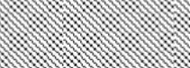

12
[redacted]Requirements
[redacted-person]
[redacted]
84-52204
09.07. 2002
19.02. 2009
[redacted-person]./OU
Phone [redacted-phone]
Fax [redacted-phone]
First issue Change status
[redacted-co]
D[redacted]
[redacted]Canada CMVSS 210.1/ 210.2
LAH.8P0.885.B
[redacted-person] Specifications LAH.8P0.885.B
Canada CMVSS 210.1/ 210.2
Dept.: [redacted-id]
Page: 2 of 9
Change status: [redacted-phone]
|
|
|
|---|---|---|
| [redacted-person] |
|
[redacted] |
| [redacted-person] |
|
[redacted] |
| [redacted-person] |
|
[redacted] |
| [redacted-person] |
|
[redacted] |
| [redacted-person] |
|
[redacted] |
| [redacted-person] |
|
[redacted] |
[redacted-person] Specifications LAH.8P0.885.B
Canada CMVSS 210.1/ 210.2
Dept.: [redacted-id]
Page: 3 of 9
Change status: [redacted-phone]
[redacted-person] Specifications LAH.8P0.885.B
Canada CMVSS 210.1/ 210.2
Dept.: [redacted-id]
Page: 4 of 9
Change status: [redacted-phone]
[redacted-person] Specifications describe the services, requirements and test conditions to be satisfied by the product.
In addition to these [redacted-person], the development conditions specified in Volkswagen standard [redacted-co]99000 apply.
All requirements of the [redacted]must be observed.
The contents of these [redacted-person] Specifications must not be disclosed to third parties without the express permission of [redacted-co].
Development of child restraint anchorage systems for Canada according to the requirements as stipulated in CMVSS 210.1/210.2
The child restraint anchorage systems must be developed and tested according to CMVSS 210.1/210.2. In case of new versions of CMVSS 210.1/210.2, the respective requirements must be met. Any other country-specific specifications must be observed.
The following laws and requirements must be observed during development. The most recent relevant change statuses apply:
FMVSS 208, 213, and 225
CMVSS 210.1/ 210.2 and 213
ISO 13216-1
ECE-R 16
[redacted-person] for Seats LAHxxx881x and LAHxxx885x [redacted-person] for ISOFIX [redacted]LAH8P0881A and LAH8P0885 (specifically for surface and testing)
The weight of the child restraint anchorage systems and additional measures must be kept as low as possible.
Child restraint anchorage systems must be developed for seats that are to be provided with child restraint anchorage systems according to CMVSS 210.1/210.2. The following minimum equipment requirements must be observed among other things:
The following child restraint anchorages are required for 5-seat vehicles with three seats on the rear seat bench:
seats with lower anchorage points ("ISOFOX")
seats with upper anchorage points ("top tether").
[redacted-person] Specifications LAH.8P0.885.B
Canada CMVSS 210.1/ 210.2
Dept.: [redacted-id]
Page: 5 of 9
Change status: [redacted-phone]
The following child restraint anchorages are required for 4-seat vehicles with two seats on the rear seat bench:
2 seats with lower anchorage points ("ISOFOX")
2 seats with upper anchorage points ("top tether").
The following child restraint anchorages are required for 2-seat vehicles without rear seat bench:
front passenger seat with lower anchorage points ("ISOFOX") front passenger seat with upper anchorage points ("top tether").
Vehicles with a rear seat space of less than 720 mm and a "key switch" for deactivation of the front passenger air bag may be provided with lower anchorage points on the front passenger seat instead of the lower anchorage points in the second row of seats.
Convertibles are exempted from the "top tether" requirement.
The child restraint anchorages must be designed according to the design and dimensional stipulations of CMVSS 210.1/210.2 for the seats to be equipped.
The anchorages must not affect normal seat comfort.
If the lower child restraint anchorage system is foldable, the fold-out control must be clearly visible. When installing the child restraint, the fastening points on the vehicle must securely maintain their position. Foldable child restraint anchorages are only permitted until [redacted-phone]
Requirement acc. to CMVSS 210.2: displacement must not exceed 5 mm when a force of 100 N (in all directions) is applied to the ISOFIX anchorage point.
The installation of a "tether hook" according to CMVSS 213 must be guaranteed for all child restraint anchorages.
The lower child restraint anchorages must be either visible or must be provided with the markings and the respective symbol as stipulated in CMVSS 210.2. The design of the vehicle seat must not be impaired.
If the upper child restraint anchorage point is equipped with a cover, then it must be fitted with the ISO symbol for top tether anchorage systems (design according to CMVSS 210.1).
Requirements according to ECE-R 16
The child restraint anchorage systems must be made from recyclable material. Plastic parts must be pure-type and marked accordingly. When different materials are used, it must be ensured that they are easy to separate.
No damage impairing the function of the bearing structures must occur during any of the tests described in this Section. Moreover, the parts must not splinter, tear, or develop sharp edges.
[redacted-person] Specifications LAH.8P0.885.B
Canada CMVSS 210.1/ 210.2
Dept.: [redacted-id]
Page: 6 of 9
Change status: [redacted-phone]
No tearing out of anchorage points
No fracture causing risk of injury
Fulfillment of all requirements even in tests with the highest possible seat weight
No deformation patterns must occur that pose any risk of injury to the occupants.
All safety requirements according to CMVSS 210.1/210.2 must also be fulfilled with an overload of 20%.
The static tensile tests on the child restraint anchorages must be performed according to CMVSS 210.1/210.2 (child restraint testing frame for seats without "ISOFIX", child restraint testing frame for seats with "ISOFIX"). Requirements must not be exceeded even with an overload of 20%.
For adjustable seats, the tensile tests must be performed in the rearmost upper and rearmost lower seat position. Further seat positions are defined in CMVSS 210.1/210.2.
The final tests must be performed in a vehicle body.
|
|
|
|
||||||
|---|---|---|---|---|---|---|---|---|---|
|
|||||||||
|
|||||||||
|
|||||||||
F1 = F2 = 15,0 kN (CMVSS 210.2) or 18,0 kN (+ 20%). Force must be applied simultaneously.
[redacted-person] Specifications LAH.8P0.885.B
Canada CMVSS 210.1/ 210.2
Dept.: [redacted-id]
Page: 7 of 9
Change status: [redacted-phone]

F3 = F4 = 5,0 kN (CMVSS 210.2) or 6,0 kN (+ 20%). Force must be applied simultaneously.
F5 = F6 = 5,0 kN (CMVSS 210.2) or 6,0 kN (+ 20%). Force must be applied simultaneously.
In addition to the tensile tests as stipulated in CMVSS 210.2, the following tensile tests are required for lower child restraint anchorages that are attached to the seat.
These tests must be performed in the rearmost upper and in the rearmost lower seat position.
|
|
|
|
|---|---|---|---|
|
|
|
|
|
|
|
|
|
|
|
|
|
|
|
|
|
|
|
|
|
|
|
|
A new test scope can be coordinated with [redacted-co] after first simulation calculations and first test experiences.
[redacted-person] Specifications LAH.8P0.885.B
Canada CMVSS 210.1/ 210.2
Dept.: [redacted-id]
Page: 8 of 9
Change status: [redacted-phone]
The pull forces are applied through the child restraint test frame (design according to CMVSS 210.2) attached to the ISOFIX anchorages and attached to the top tether anchorages using a wire rope. All seats in one seat row must be tested simultaneously.
Prior to the actual tensile test, a pre-load of 500 N must be applied. Displacement is measured only after application of the pre-load.
Subsequently, the pull forces (15,0 kN for straight pull and 5,0 kN for diagonal pull) must be applied simultaneously within 30 seconds and must be held for 1 second. The force is then increased by 20% within 2 seconds (18 kN for straight pull and 6,0 kN for diagonal pull), held for 1 second and released within 2 seconds.
All test-specific criteria must be complied with and documented during both the development phase and standard production testing.
Forces must not fall below the required levels throughout the holding time. Displacement is not measured for the straight pull.
For diagonal pull, the maximum forward displacement (horizontal to pull direction) of point x of the pulling fixtures for outer seats is 125 mm and for inner seats 150 mm (dynamic).
[redacted-person] Specifications LAH.8P0.885.B
Canada CMVSS 210.1/ 210.2
Dept.: [redacted-id]
Page: 9 of 9
Change status: [redacted-phone]
F1 = F2 = F3 = 10,0 kN (CMVSS 210.1) or 12,0 kN (+ 20%). Force must be
applied simultaneously.
The pull force is applied via the CMVSS 210.2 child restraint test frame (attached to the ISOFIX anchorages and attached to the top tether anchorages using a wire rope and a tether hook according to CMVSS 213) or via the CMVSS 210.1 test frame (fastened with the vehicle belt and on the top tether anchorage points). All seats in one seat row must be tested simultaneously.
The pull forces (10,0 kN) must be applied simultaneously within 30 seconds and must be held for 1 second. The force is then increased by 20% within two seconds (12,0 kN), held for 1 second and released within 2 seconds.
All test-specific criteria must be complied with and documented during both the development phase and standard production testing.
[redacted-person] Specifications LAH.8P0.885.B
Canada CMVSS 210.1/ 210.2
Dept.: [redacted-id]
Page: 10 of 9
Change status: [redacted-phone]
Forces must not fall below the required levels throughout the holding time.
The adjustment functions of the vehicle seats must not be impaired. It must be possible to install the child restraint in all adjustable positions of the seat (customary seat adjustments).
Foldable ISOFIX anchorages must meet the requirements of CMVSS 210.2:
- There must be no displacements > 5 mm when applying loads of 100 N to the ISOFIX anchorage point.
Foldable systems must allow one-hand operation.
The function of the foldable child restraint anchorage system must be ensured at temperatures between –40°C and +80°C.
The child restraint anchorage system must not lead to a decrease in comfort or to unpleasant sounds (e.[redacted-person]) during driving operation.
The usage position must be represented free of play.
The foldable child restraint anchorage system must be functional in all coordinate directions even in the event of stress due to production tolerances.
The maximum permissible increase of the operating forces in the event of stress is 20%.
Unlocking: N Locking: N
The values will be specified based on first samples.
An endurance test with 5 000 cycles must be performed: 1 500 cycles at room temperature without soiling
1 000 cycles at +60 °C
1 000 cycles at –20 °C
1 500 cycles at room temperature with soiling (5 g test dust directly applied to moving parts)
Damage to the ISOFIX system of any kind must not occur. The system must still be fully functional after testing. After the endurance test, the maximum permissible increase of the operating force values is 20%.